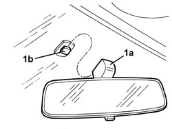

7065C68 INTERIOR REAR VIEW MIRROR - R+R
- Path
- Procedures > 70 FITTINGS > 7065 SEAT BELTS AND ACCESSORIES > 7065C ACCESSORIES AND DECORATIONS > 7065C68 INTERIOR REAR VIEW MIRROR - R+R
- Kind
- repair procedure (removal / refitting; the operation number is the code)
- Applies to
- all engines; all production periods
- Interactive page
- https://sloeber94.github.io/elrnDB-aBrrSpdr/en/#/946002699
Applies to: all engines; all production periods
 Removing
Removing
 Refitting
Refitting1. Raise the rear view mirror support (1a), releasing it upwards from the retaining plate (1b) secured to the window.

Applies to: all engines; all production periods
Refitting
Removing- Check that the rear view mirror is not damaged.
- Attach the support for the rear view mirror to the retaining plate secured to the window.
- Check that the rear view mirror moves correctly.
Topics that link to this page (14)
- 5570T61 MULTI-FUNCTION AERIAL - R.R.
- 5580C50 WINDOW BAG MODULE (ONE) LH OR RH - R.R
- 7030L10 TRANSPARENT ROOF PANEL - R.R.
- 7030L11 TRANSPARENT ROOF PANEL - R.R. FOR VERSIONS WITH SUN BLIND
- 7030L12 TRANSPARENT ROOF PANEL COVER - R.R.
- 7030L20 SUN BLIND ASSEMBLY - R.R.
- 7030L21 SUN BLIND ASSEMBLY - ALIGNMENT
- 7030L22 SLIDING SUN BLIND - R.R.
- 7030L23 SUN BLIND CROSSMEMBER - R.R.
- 7030L24 SLIDING BLIND MOVEMENT MOTOR - R.R.
- 7030L25 SLIDING BLIND DRIVE CABLES - R.R.
- 7030L26 SLIDING BLIND RETAINING CLIP (ONE), LEFT OR RIGHT - R.R.
- 7035A18 WINDSCREEN GLASS - R.R INCLUDING CLEANING HOUSING
- 7040H10 ROOF PANEL LINING - R.R.